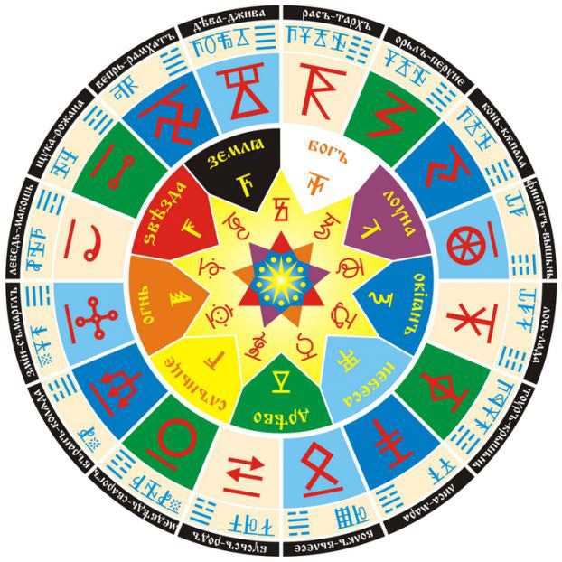

СВАРОЖИЙ КРУГ

Жизнь во Вселенной подчинена Единым Законам и они незыблемы (что есть вверху подобно тому, что внизу) и за соблюдением этих Законов наблюдает Числобог, который является Хранителем Рек Времени.
Все Земли, вращаясь вокруг своей оси, излучают энергию, а ещё они вращаются вокруг Ярилы, а Ярила вращается вокруг центра галактики и они все находятся как бы в замкнутом колебательном контуре, излучают тонкие виды энергий, которые питают Солнце. Эти энергии проходят вовнутрь и идут вовне и таким образом все Звёзды, Земли и Солнца влияют на каждое небесное тело.
Влияние идёт на каждое растение, на каждое насекомое, на каждое животное, на каждого человека и между ними есть взаимосвязь. А раз существует взаимосвязь, взаимовлияние, то значит и жизнь человека также влияет на Земли, на Луны, на Солнце и Звёзды.
Кроме этого на человека влияют также Вышние Боги, Боги-Покровители, Боги-Управители, Боги-Защитники, Боги-Учителя и его Предки. Они дают Духовную и Душевную поддержку. А когда это необходимо, то и оберегают от влияния тёмных сил и несчастий в мире Яви. Но как бы не помогали человеку Боги, Предки, Стихии, Солнце, Луны, Духи, Земли и др., какая бы помощь ни шла, человек, в конце концов, сам определяет, как ему выполнить Долг перед Родом.
Ведь основной закон Вселенной – это свобода выбора Пути для достижения Высших целей. И поэтому человек сам выбирает – либо идти вверх, либо идти в Пекло.
И в этом выборе фактор Воли является определяющим. Каждому человеку дана Воля. Либо развиваться, либо нет. Либо разрушать, либо созидать. Но для лучшего понимания своего выбора наши предки просчитывали то, какие возможности им даны, и какие уроки они должны выполнить в течение земной жизни. Сие важно было знать, что необходимо, для того чтобы Человек пошёл по Прямому Пути, и тёмные силы не сбили его на Ложный Путь.
СВАРОЖИЙ КРУГ - 16 Кругов Лет проходят через 9 Природных стихий. Полный Круг прохождения называется - Круг Жизни. Эти равные части называются - Небесными Чертогами Сварожьего Круга. Каждому Чертогу соответствует свой Покровитель: Бог или Богиня.
НебесныеЧертоги |
Покровители |
П е р и о д(по Круголету) |
|
|
1 |
Девы |
Джива |
18 Тайлет – 1 Рамхат |
|
2 |
Вепря |
Рамхат |
1 Рамхат – 22 Рамхат |
|
3 |
Щуки |
Рожана |
22 Рамхат – 4 Айлет |
|
4 |
Лебедя |
Макошь |
4 Айлет – 25 Айлет |
|
5 |
Змея |
Семаргл |
25 Айлет – 7 Бейлет |
|
6 |
Ворона |
Варуна |
7 Бейлет – 29 Бейлет |
|
7 |
Медведя |
Сварог |
29 Бейлеь – 12 Гейлет |
|
8 |
Бусла |
Род |
12 Гейлет – 37 Гейлет |
|
9 |
Волка |
Велес |
37 Гейлет – 22 Дайлет |
|
10 |
Лисы |
Марена |
22 Дайлет – 4 Эйлет |
|
11 |
Тура |
Крышень |
4 Эйлет – 26 Эйлет |
|
12 |
Лося |
Лада |
26 Эйлет – 9 Вейлет |
|
13 |
Финиста |
Вышень |
9 Вейлет – 31 Вейлет |
|
14 |
Коня |
Купала |
31 Вейлет – 13 Хейлет |
|
15 |
Орла |
Перун |
13 Хейлет – 35 Хейлет |
|
16 |
Раса |
Тарх |
35 Хейлет – 18 Тайлет |
1. Чертог Девы. Покровительствует Богиня Джива - она Богиня Душ наших и заведует зарождением Жизни, т.е. Дева Жива, а сокращённо Джива. Символ – руна Жива. Отсюда следует, что человек, рожденный под этим Чертогом, обязательно должен познать, что есть Душа, её путь восхождения и научится возрождать жизнь (садить деревья, возрождать источники жизни, восстанавливать природу и животную и растительную и т. д.). Священное дерево – ЯБЛОНЯ.
Чертог Девы и Вепря дает человеку стремление к познанию окружающего Мира во всем его многообразии. Люди, рожденные в данном Чертоге, не признают давления на себя при принятии решений и сами стремятся быть лидерами, чтобы самостоятельно решать все вопросы.
Чертог Девы дает упрямство, независимость, способность достигать поставленной цели.
Считается, что когда Ярило-Солнце находится в Небесном Чертоге Девы, рождаются дети, наделенные особыми чувствами, такими как: предвидение Великих изменений в жизни людей и предсказание грозных природных явлений, способность разобраться в любой запутанной ситуации.
2. Чертог Вепря. Им управляет Рамхат. А символ Рамхата (его называют Небесным Вепрем) – двойная Инглия. Рамхат наблюдает за сохранением и соблюдением вселенских законов (РИТА), чтобы любые начинания соответствовали им. Поэтому человек, рожденный под этим Чертогом, должен познавать вселенские законы, соблюдать их сам и обучать им других. Священное дерево – ГРУША.
Чертог Девы и Вепря дает человеку стремление к познанию окружающего Мира во всем его многообразии. Люди, рожденные в данном Чертогах, не признают давления на себя при принятии решений и сами стремятся быть лидерами, чтобы самостоятельно решать все вопросы. Чертог Вепря дает своевольность, решительность, умелое выполнение поставленной задачи, при условии, что не будет выбора.
3. Чертог Щуки. Управляет им Рожана. Рожана отвечает за рождение. Она покровительница рожениц и беременных. Священное дерево – СЛИВА – собирает осенью поливитамины и хранит их очень долго.
Человек, рожденный под этим знаком, должен познать рождение своего потомства и его воспитание на благо Рода. Люди, рожденные в Чертоге Щуки и Лебедя, стремятся к спокойной, размеренной Жизни, к традиционному укладу, наполненному чувственными сопереживаниями. Для них самой трудной задачей является принятие важного решения. Чертог Щуки дает способность адаптироваться в любой среде и везде чувствовать себя как рыба в воде.
4. Чертог Лебедя. Управляет Богиня Макошь. Макошь плетёт судьбу, а ей помогают дочери Среча и Несреча (Доля и Недоля). Символ: рог изобилия и одновременно ковш. Макошь – Мать Ковша. Большая Медведица. Священное дерево – СОСНА.
Рожденный под этим Чертогом должен научиться владеть методами познания своей судьбы и других людей, определять пути для их исполнения. Люди, рожденные в Чертоге Щуки и Лебедя, стремятся к спокойной, размеренной Жизни, к традиционному укладу, наполненному чувственными сопереживаниями. Для них самой трудной задачей является принятие важного решения. Чертог Лебедя дает ветреность, своенравность и своевольность, а иногда, чрезмерную гордость и самовозвеличивание.
5. Чертог Змея. Покровитель – Бог Семаргл. Посредник между людьми и Богами. Человек, рожденный под этим Чертогом, обязан восстановить свою связь с Богами и научится быть посредником для других .Кроме этого, Змей всегда символизировал Мудрость Огненную. Священное Дерево – ЛИПА. Дерево, которое жар сгоняет своей силой. Когда у человека температура, ему давали липового отвара. Липовый цвет добавляли в чай, в сбитень.
Люди, рожденные в Чертоге Змия и Ворона, очень активны по своей природе. Самое тяжелое для них - это одиночество. Очень влюбчивы и считают, что только Любовь (Явная, физическая, плотская) должна стоять во главе угла, а потом уже все остальное. Чертог Змия дает холодный, ничем не прикрытый эгоизм, самовлюбленность, иногда переходящую в любвеобильность, а также неприятие критики в свой адрес.
6. Чертог Врана. Бог-покровитель Чертога – Коляда (отвечал за перемены в жизни и начинания). Человек должен научится благоприятно воспринимать перемены, и при необходимости спокойно начинать все сначала. Символом является трезубец, это руническое обозначение. Священное Дерево – ЛИСТВЕННИЦА.
В честь Коляды праздник проводится – День Перемен, Коляда (Менари), а проводится он в день зимнего Солнцестояния (Колядки). Люди, рожденные в Чертоге Змия и Ворона, очень активны по своей природе. Самое тяжелое для них - это одиночество. Очень влюбчивы и считают, что только Любовь (Явная, физическая, плотская) должна стоять во главе угла, а потом уже все остальное.
Чертог Ворона дает добродушный, открытый характер, влюбчивость и любвеобильность, иногда доходящую до ветрености. К 40 Летам дает человеку Мудрый Жизненный опыт.
7. Чертог Медведя. Бог покровитель – Сварог. Бог творец. В Саньтиях описан Чертог Медведя. Медведь – малинник, а напротив – ДУБ. А корни поливали медвежьей кровью (так в древние времена называли малиновый сок). Малиновый сок сладкий. На его вкус собираются муравьи, которые заодно поедают и вредных для дерева личинок. Человек, рожденный под этим Чертогом, должен научится быть творцом, то есть уметь создавать вещи , произведения и т.д. то есть творить. Священное дерево Малина и Бук.
Люди, рожденные в Чертоге Медведя и Бусла, добролюбивы по своей природе. Их постоянное стремление - облагородить все вокруг себя. Они созидают во благо своего Рода и при созданном достатке в своем Роду стараются иметь богатое потомство.
Чертог Медведя дает мужество, стойкость, покровительство, способность разобраться в любом деле и способность найти выход в любой запутанной ситуации.
8. Чертог Бусла (Аиста). Бог-покровитель Род. Бусел ребёночка приносит.
В Капище Веды Перуна – Основной Куммир – Куммир Бога Рода. Пращур Род – т.е. Предок . И всех вместе вглубь до Пращуров мы называем–мой Род, который меня породил. Если бы какого-то прадеда или прабабки не было, то и нас бы не было. Человек должен восстановить знания о своем роде (родословную) , научится почитать своих Предков и передать все это своим детям. Священное дерево ИВА. Ивовыми ветвями вгоняли отрокам неразумным Мудрость, которая не входит через уши. Её вгоняли через сидалищное место.
Люди, рожденные в Чертоге Медведя и Бусла, добролюбивы по своей природе. Их постоянное стремление - облагородить все вокруг себя. Они созидают во благо своего Рода и при созданном достатке в своем Роду стараются иметь богатое потомство.
Чертог Бусла дает открытость, взаимоуважение, душевность, способность выбирать наиболее удобное и благоприятное место для Жизни, чтобы вырастить здоровое потомство.
9. Чертог Волка. Бог-покровитель Велес. Велес – скотий Бог. Он покровитель скоттов (кельты). Сын Небесной Коровы Зимун (шлемы у них рогатые). Покровитель мудрости. Его ещё называют Мудрый Бог-Наставник. Его почитали и хлеборобы, и скотоводы, и ремесленники, т.е. каждому давал свою мудрость. Обернувшись Волком Небесным, он разгонял небесные стада своей матери. (Предания говорят, что Велес любил баловаться). За что мать его поручила Перуну отправить его на Мидгард-Землю, чтобы он остепенился. Его ещё называют Богом, который покровительствовал жрецам, умеющим перевоплощаться. А чтобы обернуться волком или соколом (что Велес и делал), нужно перекувырнуться через пень тополя. Священное дерево – Тополь, он помогал перевоплощению и снимал напряжение. Если у человека перенапряжение – он обнимает тополь, который забирает излишки, и гармонизирует при этом энергию. ТОПОЛЬ использовали как лечебное средство. Повредил человек палец, у него нарыв. Он дощечку тополя прикладывает и она вытягивает всё ненужное организму. Человек, рожденный под этим Чертогом, должен познавать мудрость и наставлять в ней других, как это делал Велес.
Люди, рожденные в Чертоге Волка и Лисы, искатели по своей природе. В Любви они ищут суть и смысл. Они любят экспериментировать над собой. Чувство любопытства у людей, рожденных в данном Чертоге, сильнее страха перед неизвестным и им интересно увидеть весь окружающий Мир.
Чертог Волка дает воинственность, настороженность, стремление навести порядок любой ценой. По типу характера таких людей можно назвать "санитарами Жизни".
10. Чертог Лисы. Покровительница богиня Мара. Мара – Богиня Зимы, Богиня Покоя, Умиротворения. Неправильно называть, что Мара – Богиня Смерти, она Богиня, определяющая меру (в том числе и меру жизни на земле -смерть). Природа засыпает. Её можно назвать Богиней Природного Сна. МА – РА. Мать РА – Мать Сияния. Снег лежит и сияет, и она Мать этого сияния. Она распоряжается, чтобы снег всегда чистоту и свет хранил. А когда Мара уходит в свои Северные Чертоги – Снег теряет сияние и становится рыхлым, чёрным, т.е. Мара ушла и свет прихватила с собой. Человек, рожденный под этим Чертогом, обязан воспитать в себе чувство меры, научится быть всегда спокойным и уравновешенным, нести в себе свет. На гербах Белорусии, Литвы и Восточной Польши изображён шестиконечный крест , и этот крест никакого отношения к христианству не имеет. Этот крест символизирует Духовный Путь прохождения через 3 мира: Явь, Навь и Правь. Священные древа – СМОРОДИНА и ГРАБ. Смородина чёрная снижает повышенное давление. А белая, жёлтая, красная – стабилизирует. Вводит организм в состояние покоя. Если у вас гипотония – надо малину принимать– она поднимает давление.
Люди, рожденные в Чертоге Волка и Лисы, искатели по своей природе. В Любви они ищут суть и смысл. Они любят экспериментировать над собой. Чувство любопытства у людей, рожденных в данном Чертоге, сильнее страха перед неизвестным и им интересно увидеть весь окружающий Мир. Чертог Лисы дает хитрость, умение льстить, склонность к экспериментам и опытам для того, чтобы все проверить на себе и использовать для спокойной, безбедной Жизни.
11. Чертог Тура. Бог-покровитель – Крышень. Как сказано, Крышень у врагов силу забирает. Священное дерево – ОСИНА. Хочешь избавиться от врага – постели ему спать под осину. Но осина – она и полезная. Стены и полог в бане отделывали осиной. Для того, чтобы вошли в натопленную баню и осина у вас всю хворь забрала. А веником силу вгоняли. Да ещё в снегу валялись, из колодца обливались. Вместо хворой энергии живительную силу Природы получали.
Человек, рожденный под этим Чертогом, должен воспитать в себе борца и пробудить не только явное сознание, но и духовное и душевное. Люди, рожденные в Чертоге Тура и Лося, трудолюбивы, постоянно заняты каким-либо трудом, даже если этот труд однообразен. Их внутренняя сущность как бы пробуждается к жизни с началом весны, а когда наступает Новолетие, их творчески подход к Жизни впадает в спячку.
Чертог Тура дает человеку стойкость, трудолюбие и деловую устремленность даже в рутинных условиях, упорство в достижении поставленной цели при условии, что эту цель человек определил для себя сам.
12. Чертог Лося. Покровительница Богиня Лада. Отвечает за гармонию, красоту , Любовь. Лось назывался иначе слона сохатая, т.е. слон с сохой на голове (мамонты после похолодания стали слоняться – одни ушли в Индию, другие в Африку. Там от жары облысели, слонялись по Индии и Африке и стали слонами).
Человек, рожденный под этим Чертогом, должен пробудить в себе жизненные чувства красоты, гармонии, любви. Священное дерево – БЕРЁЗА. Люди, рожденные в Чертоге Тура и Лося, трудолюбивы, постоянно заняты каким-либо трудом, даже если этот труд однообразен. Их внутренняя сущность как бы пробуждается к жизни с началом весны, а когда наступает Новолетие, их творчески подход к Жизни впадает в спячку. Чертог Лося дает веселый, любвеобильный, открытый характер, беззаботный и безмятежный образ жизни, стремление к безграничным идеалам.
13. Чертог Финиста. Бог-покровитель – Вышень. (Финист и Феникс это не одно и тоже). В нашей сказке Алёнушка отправилась в тридесятое царство за Ясным Соколом. Три-на-десятое – это 13-й Чертог. Финист – разновидность Сокола. Руническое обозначение- Колесо Сансары. Священное дерево ВИШНЯ. Раньше, чтобы разрешить какой-либо спор, спорщикам давали вишню (чёрную, определённый сорт), чтобы определить, кто говорит правду, а кто лжёт. Им давали съесть определённое количество вишни, а потом предлагали сплюнуть. У того, кто говорил ложь – слюны не было (черёмуху тоже давали). Человек, рожденный под этим Чертогом, должен научится отличать истину от лжи и помогать в этом другим, должен уметь разрешать споры.
Люди, рожденные в Чертоге Финиста и Коня, по своей необузданной неохватности пытаются делать сразу несколько дел. С детских лет они неусидчивы и поэтому они в течение дня могут браться за одно и то же дело, начиная его и бросая, но потом доводят его до конца. По своей природе они - максималисты, поэтому, совершая какие-либо деяния, их разум пытается решать глобальные Вселенские вопросы. Чертог Финиста дает осмотрительность, склонность к опытам для того, чтобы познать различные стороны Жизни, способность не падать Духом в случае неудачи. Умение браться за дела для достижения цели.
14. Чертог Коня. Бог- покровитель Купала. Рунический символ называется Йога, а Йога – это соединение. У нас и сейчас бытует слово Вкупе (вместе). Человек, рожденный под этим Чертогом, должен научится соединять стихии огня и воды, земли и воздуха, света и тьмы, а также соединять воедино разрозненные знания и т.д. (На празднике Бога Купалы человек соединяет в себе силы всех стихий). Священное дерево – ПАПОРОТНИК, ВЯЗ даёт духовное преображение, любовь (Любовь под вязами).
Люди, рожденные в Чертоге Финиста и Коня, по своей необузданной неохватности пытаются делать сразу несколько дел. С детских лет они неусидчивы и поэтому они в течение дня могут браться за одно и то же дело, начиная его и бросая, но потом доводят его до конца. По своей природе они - максималисты, поэтому, совершая какие-либо деяния, их разум пытается решать глобальные Вселенские вопросы. Чертог Коня дает человеку стремительность и всеохватывающую жажду Жизни, но очень часто за стремительным движением к какому-либо идеалу он пролетает мимо идеалов более величественных и ценных.
15. Чертог Орла. Бог- покровитель – Перун. Перун покровитель воинов, Бог чести, силы, и достоинства. На картине художника Васильева Перун стоит под дубом, а на плече Орёл сидит, а в руках, как сейчас бы сказали, он держит плазменный излучатель. Человек, рожденный под этим Чертогом, должен научится соблюдать честь , научится владеть силой , уметь отражать нападки врагов. И не только физически – раскрыть свою душу. Священное дерево - ДУБ .
Люди, рожденные в Чертоге Орла и Расы, добродушны и доброжелательны. В них очень развито чувство покровительства, но иногда это чувство может перерасти в назойливость и навязывание своего мнения другим. Обучение и познание этим людям дается легко, но познавать окружающий Мир и сущность Природы им мешает великая лень. Чтобы успокоить себя и окружающих людей, они придумали поговорку: "зачем познавать сейчас, со временем все само придет и встанет на свои места", а им говорили: "под лежачий камень и вода не течет". Чертог Орла дает мощь, решительность в действиях, полет мысли и фантазии.
16. Чертог Раса. Бог- покровитель – Тарх. Рас – это священный белый леопард или, говорят – Белый Пард. Тарх дал 9 Вед, поэтому он Дающий Бог – Даждь-Бог. Есть предания, которые говорят, что в первый приезд на нашу Землю Тарх завёз семейство кошачьих с Ингард – Земли. Человек, родившийся под этим Чертогом, должен научится приносить дары Природе, Богам и своему окружению и делать это от всего сердца. Также он должен научится оберегать и возрождать жизнь. Священное дерево – ЯСЕНЬ, ИГГ. Ясень, дуб и береза – это Мировые деревья, уходящие корнями в Сваргу Пречистую, и питающиеся жизненной силой из Небесного Ирия. Чтобы получить силу деревьев, наши Предки парились в бане вениками из их веток. Использовались все священные деревья. Делали наборные венички. Даже малину вставляли вовнутрь, чтобы не кололась. Осенью беременным женщинами давали больше слив (они хранят поливитамины). Летом давали больше яблок.
Люди, рожденные в Чертоге Расы и Орла, добродушны и доброжелательны. В них очень развито чувство покровительства, но иногда это чувство может перерасти в назойливость и навязывание своего мнения другим. Обучение и познание этим людям дается легко, но познавать окружающий Мир и сущность Природы им мешает великая лень. Чтобы успокоить себя и окружающих людей, они придумали поговорку: "зачем познавать сейчас, со временем все само придет и встанет на свои места", а им говорили: "под лежачий камень и вода не течет". Чертог Раса дает рассудительность, спокойствие при обдумывании проблемы и, в то же время, веселье и безмятежность во времена отдыха.
Таким образом, поняв, что человек должен сделать в своей жизни, наши Предки определяли, какими качествами и силами он наделен. Они высчитывали, где находились Земли и в каком Чертоге при рождении человека, и узнавали, какую информацию несёт каждый Чертог.
В Даарийском Круголете Числобога 16 лет, и каждое лето проходит через 9 стихий и в каждой Стихии оно получает новое качество, что тоже отображается на человеке.
Кроме того, еще каждый месяц несёт свою образную информационную нагрузку. Наши Предки на протяжении многих миллионов лет обращали внимание, что в данный месяц происходят такие-то явления, такие-то события. Значит, каждый месяц несёт свою особую образную систему.
А еще каждый месяц разделён на четверти, а четверть – это с 1 по 10, с 11-20, с 21-30, с 31-40, и все четверти имеют свои значения. И отдельно, красной строкой, идёт 41 день для каждого месяца (каждое Священное Лето во всех месяцах имеет 41 день).
Вот названия Месяцев Каляды Дара:
Рамхатъ - Месяц Божественного Начала.
Айлѣтъ - Месяц Новых Даров.
Бейлѣтъ - Месяц Белого Сияния и Покоя Мира.
Гэйлѣтъ - Месяц Вьюг и Стужи.
Дайлѣтъ - Месяц Пробуждения Природы.
Элѣтъ - Месяц Посева и Наречения.
Вэйлѣтъ - Месяц Ветров.
Хейлѣтъ - Месяц Получения Даров Природы.
Тайлѣтъ - Месяц Завершения.
Но каждые сутки делятся на 16 часов, каждый час тоже несёт свою информацию, т.е. получается ещё 16 значений. А в каждом часе – 144 части. И каждая из частей тоже несёт свою информационную нагрузку. А каждая часть – это 1296 долей. И доли тоже несут свою нагрузку на судьбу человека. Поэтому мы и говорим до сих пор: «У него своя доля, а у него своя». И даже если люди родились в одну секунду, в один и тот же день, то зачаты они в разных географических координатах, а значит, и доли у них разные.
Наши Предки всю эту систему просчитали, создали и передавали её из поколения в поколение. Часть обрывков знаний попала в Дравидию (Древнюю Индию), часть в Аримию (Китай), в Такемию (Египет), Иран, Ирак. И на основе этих обрывков и частей народы этих стран создавали под себя различные астрологические системы.
Наша Древняя система помогает понять и развить всё то, что дано Вам при рождении. Поэтому пращуры и говорили: «У каждого свой Рок, у каждого своя Судьба», «Что на Роду написано пером, то не вырубишь топором».
Эта система уходит своими корнями во времена, когда жизнь процветала на северном материке, который назывался - Даария (Гиперборея, Арктида, Арктогея). Поэтому данная система и носит название - Даарийский Круголет Числобога.
Древний Славянский Календарь основан на шестнадцатеричной системе счисления и образует, продолжительные промежутки времени, называемые Сварожьими Кругами, в каждом из которых Солнце проходит последовательно все 16 Чертогов за 180 Кругов Жизни. Это и есть сутки Сварога. (Кстати, 180 Кругов Жизни х 144 Лета = 25 920 Лет — это известный период обращения солнечной системы нашего Ярилы-солнца вокруг центра нашей галактики).
Круг Жизни содержит 144 Лета.
Лето — три сезона: Оусень, Зима и Весна — это одно Лето (отсюда в русском языке понятия: летопись, летоисчисление, сколько Вам лет? И т. д.)
Лето — 9 месяцев,
месяц — 41 или 40 дней (в зависимости от того нечетный или четный),
день — 16 часов,
час — 144 части,
часть — 1 296 долей,
доля — 72 мгновения,
мгновение — 760 мигов,
миг — 160 сигов (отсюда в русском языке «сигануть», т. е. быстро переместиться)
сиг — 14 000 сантигов.
Такая точность недостижима даже современными атомными хронометрами.
Новые сутки Сварога раньше начинались в момент захода Ярилы-Солнца в день равноденствия — очень просто и наглядно.
Раньше (когда не было повсеместного использования часов) новые сутки начинались с заходом Солнца.
Термин «сутки» появился немногим более 110 тыс. лет назад. Причем слово «сутки» есть только в словянских языках. Ни в англ., ни во франц., ни в нем., ни в других языках этого слова нет. А этимология его проста: соТКать, сТыКовать — т.е. соединять вместе (ТК). О — У — переходные гласные. То есть СУТКИ — сотканные, состыкованные вместе день и ночь.
Сейчас сутки начинаются ночью, когда все спят. Но даже если бы и не спали, то все равно зафиксировать начало новых суток невозможно, так как наблюдать в этот момент на небосклоне нечего.
Неделя состояла из девяти дней: понедельник, вторник, тритейник, четверг, пятница, шестица, седьмица, осьмица и неделя. Вспомните фразы из сказок: «и на первую седьмицу он поехал в Град-столицу» (Конек-Горбунок), «вот осьмица уж прошла и неделя подошла» (Каменная чаша).
Все месяцы начинались в строго определенные дни недели. Например, если первый месяц года начинается во вторник, то и все остальные нечетные месяцы будут начинаться во вторник, а четные — в седмицу. Поэтому тот календарик, который мы сегодня носим с собой и который содержит 12 разных табличек-месяцев, раньше содержал всего две таблички: одну — для нечетных месяцев, другую — для четных.
Все годы Круголета Числобога всегда начинались в строго определенные дни недели.
Многие элементы Славянского Календаря дошли до наших дней в виде поговорок и обычаев, истоки которых, к сожалению, уже забылись. Например, Великая тризна, то есть поминовение умершего родственника, совершается через неделю (9 дней) и через месяц (40 дней), то есть на девятый и сороковой день.
Семь месяцев вынашивает мать чадо во чреве своем и сорок сороков (сорок месяцев) потом кормит его грудным молоком.
А через сорок сороков (или четыре лета и четыре месяца) после рождения первого ребенка у женщин наступает период жизненного совершенствования, в результате чего она становится Ведающей Матерью или ВедьМой.
Через 369 недель после рождения человека начинается период его Духовного Обучения, ибо в девять лет происходит первое Великое приобщение к Древней Мудрости Богов и Предков.
Когда же детям из Славянских Родов исполнялось 12 лет (108 месяцев) и они достигали роста 7 пядей во лбу (124 см), для детей начинался новый этап в жизни. В 108 месяцев (или в 12 лет) наступает совершеннолетие человека, и он проходит обряды Совершеннолетия и Имянаречения, после чего мальчиков начинают обучать родовым ремеслам и воинскому искусству.
А еще через 108 месяцев, то есть в 24 лето, он, принимая Духовное освящение Священным Огнем, познает истинный смысл бытия своего Рода и истинное значение Родового имени.
В 33 лето наступает время Духовного совершенствования.
А в 369 месяцев или в 41 лето начинается эпоха Духовного Озарения.
Девушка могла выходить замуж только после 16 лет или 144 месяцев, что составляет Единый Круг Круголета. До этого срока она вестует — познаёт Весть, то есть обучается ведению домашнего хозяйства, уходу за детьми, рукоделию, а в 16 лет — заканчивает вестовать и становится НеВестой.
Повсеместное использование древнего Славянского Календаря прекратилось, к сожалению, когда Петр I ввел иностранный календарь.
Соответственно современный календарь был усложнен в угоду политическим интересам.
Неделя укоротилась до семи дней, в угоду почитателям лунного культа. Количество месяцев в году возросло и их названия изменились.
В настоящее время, если мы пользуемся современным календарем, то правильнее будет его применять только для событий последних трехсот лет. А более древние события, для ясного понимания их сути, должны быть датированы в той системе летоисчисления, которая употреблялась до 1700 года. Иначе возможно неправильное толкование нашей летописи, культуры, традиций и обычаев.
Литература:
- Славяно-Арийские Веды. «Слово Волхва Велимудра». Часть вторая - Омск; Издание Древнерусской Инглиистической церкви Православных Староверов- Инглингов; Издательство «АРКОР», 2000.-256 стр.